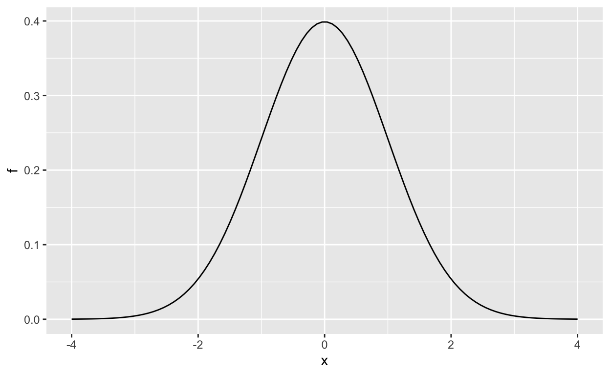

datsci_03: Probability
Introduction and Welcome!
Usage: This tutorial accompanies Introduction to Data Science by Prof Rafael Irizarry. It contains material from the textbook which is offered under a CC BY-NC-SA 4.0.
Welcome to Data Science: Probability!
We’re excited to have you join us in this course, which is designed to teach you the basics of probability theory, which is the mathematical foundation of statistical inference.
Course Overview
This is the third in a series of courses in the Introduction to Data Science program. The courses in the program are designed to prepare you to do data analysis in , from simple computations to machine learning. The courses are designed to be taken in order. A prerequisite for this course is courses 1 and 2 of the series or equivalent knowledge of basic R coding and data visualization. If you need to learn or refresh some basic , check out Data Science: Basics (datsci_01), the first course in this series.
The textbook for the Data Science course series is freely available online. This course corresponds to the Probability section of textbook, starting here.
This course assumes you are comfortable with basic math, algebra, and logical operations. We have partnered with DataCamp for some assignments in that allow you to program directly in a browser-based interface. You will further have access to additional exercises to be completed on your local installation of .
Using a combination of a guided introduction through short video lectures and more independent in-depth exploration, you will get to practice your new skills on real-life applications.
Probability theory is the mathematical foundation of statistical inference which is indispensable for analyzing data affected by chance, and thus essential for data scientists. In this course, you will learn important concepts in probability theory. The motivation for this course is the circumstances surrounding the financial crisis of 2007-2008. Part of what caused this financial crisis was that the risk of certain securities sold by financial institutions was underestimated. To begin to understand this very complicated event, we need to understand the basics of probability. We will introduce important concepts such as random variables, independence, Monte Carlo simulations, expected values, standard errors, and the Central Limit Theorem. These statistical concepts are fundamental to conducting statistical tests on data and understanding whether the data you are analyzing are likely occurring due to an experimental method or to chance. Statistical inference, covered in the next course in this program (datsci_04), builds upon probability theory.
In this course, you will learn:
- Important concepts in probability theory including random variables and independence
- How to perform a Monte Carlo simulation
- The meaning of expected values and standard errors and how to compute them in
- The importance of the Central Limit Theorem
Course overview
Section 1: Discrete Probability
- You will learn about basic principles of probability related to categorical data using card games as examples.
Section 2: Continuous Probability
- You will learn about basic principles of probability related to numeric and continuous data.
Section 3: Random Variables, Sampling Models, and The Central Limit Theorem
- You will learn about random variables (numeric outcomes resulting from random processes), how to model data generation procedures as draws from an urn, and the Central Limit Theorem, which applies to large sample sizes.
Section 4: The Big Short
- You will learn how interest rates are determined and how some bad assumptions led to the financial crisis of 2007-2008.
Meet the Course Instructor

Rafael Irizarry is a Professor of Biostatistics and Computational Biology at the Dana-Farber Cancer Institute and a Professor of Biostatistics at Harvard Chan School of Public Health. He has been analyzing data, from sound signals to genomic measurements, for over 20 years.
Professor Irizarry teaches a popular Data Science course at Harvard and has developed several online courses on data analysis that are offered by HarvardX. These online courses, divided into the Data Analysis for the Life Sciences series and Genomics Data Analysis series, have been completed by thousands of students and much of the material is included in a book with a freely available online version.
Webpage: http://rafalab.github.io
Essential Course Information
Course Syllabus
The course syllabus contains a more comprehensive version of the information below - but if you don’t read the syllabus, please read this!
Course Structure
This is a self-paced course. You can work on it with your own timeline in mind. However, we suggest that you work on a section per week, and it will take you 2 - 4 hours per week.
Check the course home page for important dates. If you are interested in pursuing a Verified Certificate, you will need to upgrade before the date listed on the home page and finish all assignments before course close.
Grading
Assignments in the course allow you to practice your coding skills using the DataCamp platform. R is a flexible programming language designed partly for readability and ease of programming.
HarvardX has partnered with a platform called DataCamp to create programming assignments that you can do online. There is no need to install anything on your computer. You will be given a set of code to modify and run in your browser. You can take as many attempts as you need. When your code works correctly, you will be awarded points. You can also request hints, which will help you out, but hints decrease your point total. Remember that you can always go to the Discussion Board for help that doesn’t cost points.
Passing Rate
The passing rate is 70%. You must sign up for a Verified Certificate and earn a grade of 70% of higher in order to obtain a certificate for this course.
Installing and R Studio
Installing R
If you want to install to work on your own computer, you can download it freely from the Comprehensive R Archive Network (CRAN). Note that CRAN makes several versions of available: versions for multiple operating systems and releases older than the current one. You want to read the CRAN instructions to assure you download the correct version. If you need further help, you can try the following resources:
Installing RStudio
RStudio is an integrated development environment (IDE). We highly recommend installing and using RStudio to edit and test your code. You can install RStudio through the RStudio website. Their cheatsheet is a great resource. You need to install first.
Introduction to Probability
Pre-Course Survey
Insert Survey Link here
If you cannot see the survey above, click this link to access it in a new window.
Section 1 Overview
Section 1 introduces you to Discrete Probability. Section 1 is divided into three parts:
Introduction to Discrete Probability
Combinations and Permutations
Addition Rule and Monty Hall
After completing Section 1, you will be able to:
apply basic probability theory to categorical data.
perform a Monte Carlo simulation to approximate the results of repeating an experiment over and over, including simulating the outcomes in the Monty Hall problem.
distinguish between: sampling with and without replacement, events that are and are not independent, and combinations and permutations.
apply the multiplication and addition rules, as appropriate, to calculate the probably of multiple events occurring.
use
sapply()instead of a for loop to perform element-wise operations on a function.
There are 3 assignments that use the DataCamp platform for you to practice your coding skills. There are also some quick probability calculations for you to perform as well, and there is a longer set of problems at the end of section 1.
This section corresponds to the following section of the course textbook.
We encourage you to use to interactively test out your answers and further your learning.
1.1 Discrete Probability
Textbook link
The content is discussed within the textbook section - 13.1 Discrete probability.
Key Points
The probability of an event is the proportion of times the event occurs when we repeat the experiment independently under the same conditions.
Pr(𝐴) = probability of event AAn event is defined as an outcome that can occur when when something happens by chance.
We can determine probabilities related to discrete variables (picking a red bead, choosing 48 Democrats and 52 Republicans from 100 likely voters) and continuous variables (height over 6 feet).
1.1 Monte Carlo Simulations
Textbook link
The content is discussed within the textbook section - Chapter 13 Probability.
Key Points
Monte Carlo simulations model the probability of different outcomes by repeating a random process a large enough number of times that the results are similar to what would be observed if the process were repeated forever.
The
sample()function draws random outcomes from a set of options.The
replicate()function repeats lines of code a set number of times. It is used withsample()and similar functions to run Monte Carlo simulations.
Video Code
Note that your exact outcome values from the Monte Carlo simulation will differ because the sampling is random.
beads <- rep(c("red", "blue"), times = c(2,3)) # create an urn with 2 red, 3 blue
beads # view beads object
sample(beads, 1) # sample 1 bead at random
B <- 10000 # number of times to draw 1 bead
events <- replicate(B, sample(beads, 1)) # draw 1 bead, B times
tab <- table(events) # make a table of outcome counts
tab # view count table
prop.table(tab) # view table of outcome proportionsSetting the Random Seed
The set.seed() function
Before we continue, we will briefly explain the following important line of code:
set.seed(1986) Throughout this book, we use random number generators. This implies that many of the results presented can actually change by chance, which then suggests that a frozen version of the book may show a different result than what you obtain when you try to code as shown in the book. This is actually fine since the results are random and change from time to time. However, if you want to to ensure that results are exactly the same every time you run them, you can set ’s random number generation seed to a specific number. Above we set it to 1986. We want to avoid using the same seed every time. A popular way to pick the seed is the year - month - day. For example, we picked 1986 on December 20, 2018: 2018 − 12 − 20 = 1986.
You can learn more about setting the seed by looking at the documentation:
?set.seedImportant note on seeds in R 3.5 and R 3.6
was recently updated to version 3.6 in early 2019. In this update, the default method for setting the seed changed. This means that exercises, videos, textbook excerpts and other code you encounter online may yield a different result based on your version of .
If you are running 3.6, you can revert to the original seed setting behavior by adding the argument sample.kind=“Rounding”. For example:
set.seed(1)
set.seed(1, sample.kind="Rounding") # will make R 3.6 generate a seed as in R 3.5Using the sample.kind="Rounding" argument will generate a message:
non-uniform 'Rounding' sampler used
This is not a warning or a cause for alarm - it is a confirmation that is using the alternate seed generation method, and you should expect to receive this message in your console.
If you use 3.6, you should always use the second form of set.seed() in this course series (outside of DataCamp assignments). Failure to do so may result in an otherwise correct answer being rejected by the grader. In most cases where a seed is required, you will be reminded of this fact.
Using the mean Function for Probability
An important application of the mean() function
In , applying the mean() function to a logical vector returns the proportion of elements that are TRUE. It is very common to use the mean() function in this way to calculate probabilities and we will do so throughout the course.
Suppose you have the vector beads from a previous video:
beads <- rep(c("red", "blue"), times = c(2,3))
beads
[1] "red" "red" "blue" "blue" "blue"To find the probability of drawing a blue bead at random, you can run:
mean(beads == "blue")
[1] 0.6This code is broken down into steps inside . First, evaluates the logical statement beads == "blue", which generates the vector:
FALSE FALSE TRUE TRUE TRUEWhen the mean function is applied, coerces the logical values to numeric values, changing TRUE to 1 and FALSE to 0:
0 0 1 1 1The mean of the zeros and ones thus gives the proportion of TRUE values. As we have learned and will continue to see, probabilities are directly related to the proportion of events that satisfy a requirement.
Probability Distributions
Textbook link
The content is discussed within the textbook section - Chapter 13 Probability.
Key Points
The probability distribution for a variable describes the probability of observing each possible outcome.
For discrete categorical variables, the probability distribution is defined by the proportions for each group.
Independence
Textbook link
The content is discussed within the textbook section - 13.3 Independence.
Errors and clarifications
At 4:32 in the video, it should be 16 out of 51, not 12 out of 51. While the audio is incorrect, the transcript and the text on screen both now have the correct number.
Note that this calculation only applies to getting blackjack in the order “Ace, Face/10”. We consider the full probability including the possible order “Face/10, Ace” later when discussing the addition rule.
Key Points
Conditional probabilities compute the probability that an event occurs given information about dependent events. For example, the probability of drawing a second king given that the first draw is a king is:
Pr(Card 2 is a king∣Card 1 is a king) = 3/51If two events 𝐴 and 𝐵 are independent, Pr(𝐴∣𝐵) = Pr(𝐴).
To determine the probability of multiple events occurring, we use the multiplication rule.
Equations
The multiplication rule for independent events is:
Pr(𝐴 and 𝐵 and 𝐶) = Pr(𝐴) × Pr(𝐵) × Pr(𝐶)The multiplication rule for dependent events considers the conditional probability of both events occurring:
Pr(𝐴 and 𝐵) = Pr(𝐴) × Pr(𝐵∣𝐴)We can expand the multiplication rule for dependent events to more than 2 events:
Pr(𝐴 and 𝐵 and 𝐶) = Pr(𝐴) × Pr(𝐵∣𝐴) × Pr(𝐶∣𝐴 and 𝐵)1.1 Assessment: Introduction to Discrete Probability
Insert assessment here
1.1 DataCamp Assessment: Introduction to Discrete Probability
Insert assessment here
1.2 Combinations and Permutations
Textbook link
The content is discussed within the textbook section - 13.6 Combinations and permutations
Key points
paste()joins two strings and inserts a space in between.expand.grid()gives the combinations of 2 vectors or lists.permutations(n,r)from the gtools package lists the different ways that r items can be selected from a set of n options when order matters.combinations(n,r)from the gtools package lists the different ways that r items can be selected from a set of n options when order does not matter.
Code: Introducing paste() and expand.grid()
# joining strings with paste
number <- "Three"
suit <- "Hearts"
paste(number, suit)
# joining vectors element-wise with paste
paste(letters[1:5], as.character(1:5))
# generating combinations of 2 vectors with expand.grid
expand.grid(pants = c("blue", "black"), shirt = c("white", "grey", "plaid"))Code: Generating a deck of cards
suits <- c("Diamonds", "Clubs", "Hearts", "Spades")
numbers <- c("Ace", "Deuce", "Three", "Four", "Five", "Six", "Seven", "Eight", "Nine", "Ten", "Jack", "Queen", "King")
deck <- expand.grid(number = numbers, suit = suits)
deck <- paste(deck$number, deck$suit)
# probability of drawing a king
kings <- paste("King", suits)
mean(deck %in% kings)Code: Permutations and combinations
Correction: The code shown does not generate all 7 digit phone numbers because phone numbers can have repeated digits. It generates all possible 7 digit numbers without repeats.
library(gtools)
permutations(5,2) # ways to choose 2 numbers in order from 1:5
all_phone_numbers <- permutations(10, 7, v = 0:9)
n <- nrow(all_phone_numbers)
index <- sample(n, 5)
all_phone_numbers[index,]
permutations(3,2) # order matters
combinations(3,2) # order does not matterCode: Probability of drawing a second king given that one king is drawn
hands <- permutations(52,2, v = deck)
first_card <- hands[,1]
second_card <- hands[,2]
sum(first_card %in% kings)
sum(first_card %in% kings & second_card %in% kings) / sum(first_card %in% kings)Code: Probability of a natural 21 in blackjack
aces <- paste("Ace", suits)
facecard <- c("King", "Queen", "Jack", "Ten")
facecard <- expand.grid(number = facecard, suit = suits)
facecard <- paste(facecard$number, facecard$suit)
hands <- combinations(52, 2, v=deck) # all possible hands
# probability of a natural 21 given that the ace is listed first in `combinations`
mean(hands[,1] %in% aces & hands[,2] %in% facecard)
# probability of a natural 21 checking for both ace first and ace second
mean((hands[,1] %in% aces & hands[,2] %in% facecard)|(hands[,2] %in% aces & hands[,1] %in% facecard))Code:Monte Carlo simulation of natural 21 in blackjack
Note that your exact values will differ because the process is random and the seed is not set.
# code for one hand of blackjack
hand <- sample(deck, 2)
hand
# code for B=10,000 hands of blackjack
B <- 10000
results <- replicate(B, {
hand <- sample(deck, 2)
(hand[1] %in% aces & hand[2] %in% facecard) | (hand[2] %in% aces & hand[1] %in% facecard)
})
mean(results)The Birthday Problem
Textbook link
The content is discussed within the textbook section - 13.7.2 Birthday problem
Key points
duplicated()takes a vector and returns a vector of the same length with TRUE for any elements that have appeared previously in that vector.We can compute the probability of shared birthdays in a group of people by modeling birthdays as random draws from the numbers 1 through 365. We can then use this sampling model of birthdays to run a Monte Carlo simulation to estimate the probability of shared birthdays.
Code: The birthday problem
# checking for duplicated bdays in one 50 person group
n <- 50
bdays <- sample(1:365, n, replace = TRUE) # generate n random birthdays
any(duplicated(bdays)) # check if any birthdays are duplicated
# Monte Carlo simulation with B=10000 replicates
B <- 10000
results <- replicate(B, { # returns vector of B logical values
bdays <- sample(1:365, n, replace = TRUE)
any(duplicated(bdays))
})
mean(results) # calculates proportion of groups with duplicated bdays1.2 sapply
Textbook link
The textbook discussion of the basics of sapply() can be found textbook section - 3.5 Vectorization and functionals
The textbook discussion of sapply() for the birthday problem can be found within textbook section - 13.7.2 Birthday problem
Key points
Some functions automatically apply element-wise to vectors, such as
sqrt()and *. However, other functions do not operate element-wise by default. This includes functions we define ourselves.The function
sapply(x, f)allows any other function f to be applied element-wise to the vector x.The probability of an event happening is 1 minus the probability of that event not happening:
- We can compute the probability of shared birthdays mathematically:
Code: Function for birthday problem Monte Carlo simulations
Note that the function body of compute_prob() is the code that we wrote in the previous video. If we write this code as a function, we can use sapply() to apply this function to several values of n.
# function to calculate probability of shared bdays across n people
compute_prob <- function(n, B = 10000) {
same_day <- replicate(B, {
bdays <- sample(1:365, n, replace = TRUE)
any(duplicated(bdays))
})
mean(same_day)
}
n <- seq(1, 60)Code: Element-wise operation over vectors and sapply()
x <- 1:10
sqrt(x) # sqrt operates on each element of the vector
y <- 1:10
x*y # * operates element-wise on both vectors
compute_prob(n) # does not iterate over the vector n without sapply
x <- 1:10
sapply(x, sqrt) # this is equivalent to sqrt(x)
prob <- sapply(n, compute_prob) # element-wise application of compute_prob to n
plot(n, prob)Code: Computing birthday problem probabilities with sapply()
# function for computing exact probability of shared birthdays for any n
exact_prob <- function(n){
prob_unique <- seq(365, 365-n+1)/365 # vector of fractions for mult. rule
1 - prod(prob_unique) # calculate prob of no shared birthdays and subtract from 1
}
# applying function element-wise to vector of n values
eprob <- sapply(n, exact_prob)
# plotting Monte Carlo results and exact probabilities on same graph
plot(n, prob) # plot Monte Carlo results
lines(n, eprob, col = "red") # add line for exact prob1.2 How Many Monte Carlo Experiments are Enough?
Textbook link
The content is discussed within the textbook section - 13.8 Infinity in practice
Key points
- The larger the number of Monte Carlo replicates 𝐵, the more accurate the estimate.
- Determining the appropriate size for 𝐵 can require advanced statistics.
- One practical approach is to try many sizes for 𝐵 and look for sizes that provide stable estimates.
Code: Estimating a practical value of B
This code runs Monte Carlo simulations to estimate the probability of shared birthdays using several B values and plots the results. When B is large enough that the estimated probability stays stable, then we have selected a useful value of B.
B <- 10^seq(1, 5, len = 100) # defines vector of many B values
compute_prob <- function(B, n = 22){ # function to run Monte Carlo simulation with each B
same_day <- replicate(B, {
bdays <- sample(1:365, n, replace = TRUE)
any(duplicated(bdays))
})
mean(same_day)
}
prob <- sapply(B, compute_prob) # apply compute_prob to many values of B
plot(log10(B), prob, type = "l") # plot a line graph of estimates 1.2 DataCamp Assessment: Combinations and Permutations
Insert assessment here
The Addition Rule
Textbook link
The content is discussed within the textbook section - 13.5.3 Addition rule
Clarification
By “facecard”, the professor means a card with a value of 10 (K, Q, J, 10).
Key points
- The addition rule states that the probability of event 𝐴 or event 𝐵 happening is the probability of event 𝐴 plus the probability of event 𝐵 minus the probability of both events 𝐴 and 𝐵 happening together.
- Note that (𝐴 or 𝐵) is equivalent to (𝐴|𝐵).
Example: The addition rule for a natural 21 in blackjack
We apply the addition rule where 𝐴 = drawing an ace then a facecard and 𝐵 = drawing a facecard then an ace. Note that in this case, both events A and B cannot happen at the same time, so Pr(𝐴 and 𝐵) = 0.
The Monty Hall Problem
Textbook link
The content is discussed within the textbook section - 13.7.1 Monty Hall problem
Error in Monty Hall explanation
At 0:32, the professor incorrectly says that Monty Hall opens one of the two remaining doors only if the contestant did not pick the prize door on the first try. In the actual problem, Monty Hall always opens one of the two remaining doors (never revealing the prize). The Monte Carlo simulation code is correct for the actual problem.
Key points
Monte Carlo simulations can be used to simulate random outcomes, which makes them useful when exploring ambiguous or less intuitive problems like the Monty Hall problem.
In the Monty Hall problem, contestants choose one of three doors that may contain a prize. Then, one of the doors that was not chosen by the contestant and does not contain a prize is revealed. The contestant can then choose whether to stick with the original choice or switch to the remaining unopened door.
Although it may seem intuitively like the contestant has a 1 in 2 chance of winning regardless of whether they stick or switch, Monte Carlo simulations demonstrate that the actual probability of winning is 1 in 3 with the stick strategy and 2 in 3 with the switch strategy.
For more on the Monty Hall problem, you can watch a detailed explanation here or read an explanation here.
Code: Monte Carlo simulation of stick strategy
B <- 10000
stick <- replicate(B, {
doors <- as.character(1:3)
prize <- sample(c("car","goat","goat")) # puts prizes in random order
prize_door <- doors[prize == "car"] # note which door has prize
my_pick <- sample(doors, 1) # note which door is chosen
show <- sample(doors[!doors %in% c(my_pick, prize_door)],1) # open door with no prize that isn't chosen
stick <- my_pick # stick with original door
stick == prize_door # test whether the original door has the prize
})
mean(stick) # probability of choosing prize door when stickingCode: Monte Carlo simulation of switch strategy
switch <- replicate(B, {
doors <- as.character(1:3)
prize <- sample(c("car","goat","goat")) # puts prizes in random order
prize_door <- doors[prize == "car"] # note which door has prize
my_pick <- sample(doors, 1) # note which door is chosen first
show <- sample(doors[!doors %in% c(my_pick, prize_door)], 1) # open door with no prize that isn't chosen
switch <- doors[!doors%in%c(my_pick, show)] # switch to the door that wasn't chosen first or opened
switch == prize_door # test whether the switched door has the prize
})
mean(switch) # probability of choosing prize door when switching1.3 DataCamp Assessment: The Addition Rule and Monty Hall
Insert assessment here
Introduction
The following assessments allow you to practice the probability and coding skills you’ve learned in Section 1: Discrete Probability. You will likely find it useful to try out code to answer the problems using on your own machine.
You will benefit from using the following libraries:
library(gtools)
library(tidyverse)1.4 Question 1: Olympic running
Insert assessment here
1.4 Question 2: Restaurant management
Insert assessment here
1.4 Questions 3 and 4: Esophageal cancer and alcohol/tobacco use, part 1
Insert assessment here
1.4 Questions 5 and 6: Esophageal cancer and alcohol/tobacco use, part 2
Insert assessment here
Section 2 Overview
Section 2 introduces you to Continuous Probability.
After completing Section 2, you will:
understand the differences between calculating probabilities for discrete and continuous data.
be able to use cumulative distribution functions to assign probabilities to intervals when dealing with continuous data.
be able to use to generate normally distributed outcomes for use in Monte Carlo simulations.
know some of the useful theoretical continuous distributions in addition to the normal distribution, such as the student-t, chi-squared, exponential, gamma, beta, and beta-binomial distributions.
There is 1 assignment that uses the DataCamp platform for you to practice your coding skills as well as a set of questions at the end of section 3.
2.1 Continuous Probability
Textbook link
The content is discussed within the textbook section - 13.10 Continuous probability
The previous discussion of CDF is from the Data Visualization course. The content is discussed within the textbook section - 8.4 Cumulative distribution functions
Key points
The cumulative distribution function (CDF) is a distribution function for continuous data 𝑥 that reports the proportion of the data below 𝑎 for all values of 𝑎:
𝐹(𝑎) = Pr(𝑥 ≤ 𝑎)The CDF is the probability distribution function for continuous variables. For example, to determine the probability that a male student is taller than 70.5 inches given a vector of male heights 𝑥, we can use the CDF:
Pr(𝑥 > 70.5) = 1 − Pr(𝑥 ≤ 70.5) = 1 − 𝐹(70.5)The probability that an observation is in between two values 𝑎, 𝑏 is 𝐹(𝑏) − 𝐹(𝑎).
Code: Cumulative distribution function
Define x as male heights from the dslabs heights dataset:
library(tidyverse)
library(dslabs)
data(heights)
x <- heights %>% filter(sex=="Male") %>% pull(height)Given a vector x, we can define a function for computing the CDF of x using:
F <- function(a) mean(x <= a)
1 - F(70) # probability of male taller than 70 inches2.1 Theoretical Distribution
Textbook link
The content is discussed within the textbook section - 13.11 Theoretical continuous distributions
Key points
pnorm(a, avg, s)gives the value of the cumulative distribution function 𝐹(𝑎) for the normal distribution defined by averageavgand standard deviation s.We say that a random quantity is normally distributed with average avg and standard deviation s if the approximation
pnorm(a, avg, s)holds for all values of a.If we are willing to use the normal approximation for height, we can estimate the distribution simply from the mean and standard deviation of our values.
If we treat the height data as discrete rather than categorical, we see that the data are not very useful because integer values are more common than expected due to rounding. This is called discretization.
With rounded data, the normal approximation is particularly useful when computing probabilities of intervals of length 1 that include exactly one integer.
Code: Using pnorm() to calculate probabilities
Given male heights x:
library(tidyverse)
library(dslabs)
data(heights)
x <- heights %>% filter(sex=="Male") %>% pull(height)We can estimate the probability that a male is taller than 70.5 inches using:
1 - pnorm(70.5, mean(x), sd(x))Code: Discretization and the normal approximation
# plot distribution of exact heights in data
plot(prop.table(table(x)), xlab = "a = Height in inches", ylab = "Pr(x = a)")
# probabilities in actual data over length 1 ranges containing an integer
mean(x <= 68.5) - mean(x <= 67.5)
mean(x <= 69.5) - mean(x <= 68.5)
mean(x <= 70.5) - mean(x <= 69.5)
# probabilities in normal approximation match well
pnorm(68.5, mean(x), sd(x)) - pnorm(67.5, mean(x), sd(x))
pnorm(69.5, mean(x), sd(x)) - pnorm(68.5, mean(x), sd(x))
pnorm(70.5, mean(x), sd(x)) - pnorm(69.5, mean(x), sd(x))
# probabilities in actual data over other ranges don't match normal approx as well
mean(x <= 70.9) - mean(x <= 70.1)
pnorm(70.9, mean(x), sd(x)) - pnorm(70.1, mean(x), sd(x))2.1 Probability Density
Textbook link
The content is discussed within the textbook section - 13.11.2 The probability density
Key points
The probability of a single value is not defined for a continuous distribution.
The quantity with the most similar interpretation to the probability of a single value is the probability density function 𝑓(𝑥).
The probability density 𝑓(𝑥) is defined such that the integral of 𝑓(𝑥) over a range gives the CDF of that range.
In , the probability density function for the normal distribution is given by
dnorm(). We will see uses ofdnorm()in the future.Note that
dnorm()gives the density function andpnorm()gives the distribution function, which is the integral of the density function.
Plotting the Probability Density
Plotting the probability density for the normal distribution
We can use dnorm() to plot the density curve for the normal distribution. dnorm(z) gives the probability density 𝑓(𝑧) of a certain z-score, so we can draw a curve by calculating the density over a range of possible values of z.
First, we generate a series of z-scores covering the typical range of the normal distribution. Since we know 99.7% of observations will be within −3 ≤ 𝑧 ≤ 3, we can use a value of 𝑧 slightly larger than 3 and this will cover most likely values of the normal distribution. Then, we calculate 𝑓(𝑧), which is dnorm() of the series of z-scores. Last, we plot 𝑧 against 𝑓(𝑧).
library(tidyverse)
x <- seq(-4, 4, length = 100)
data.frame(x, f = dnorm(x)) %>%
ggplot(aes(x, f)) +
geom_line()
Note that dnorm() gives densities for the standard normal distribution by default. Probabilities for alternative normal distributions with mean mu and standard deviation sigma can be evaluated with:
dnorm(z, mu, sigma)2.1 Monte Carlo Simulations
Textbook link
The content is discussed within the textbook section - 13.12 Monte Carlo simulations for continuous variables
Key points
rnorm(n, avg, s)generates n random numbers from the normal distribution with average avg and standard deviation s.By generating random numbers from the normal distribution, we can simulate height data with similar properties to our dataset. Here we generate simulated height data using the normal distribution.
Code: Generating normally distributed random numbers
# define x as male heights from dslabs data
library(tidyverse)
library(dslabs)
data(heights)
x <- heights %>% filter(sex=="Male") %>% pull(height)
# generate simulated height data using normal distribution - both datasets should have n observations
n <- length(x)
avg <- mean(x)
s <- sd(x)
simulated_heights <- rnorm(n, avg, s)
# plot distribution of simulated_heights
data.frame(simulated_heights = simulated_heights) %>%
ggplot(aes(simulated_heights)) +
geom_histogram(color="black", binwidth = 2)Code: Monte Carlo simulation of tallest person over 7 feet
B <- 10000
tallest <- replicate(B, {
simulated_data <- rnorm(800, avg, s) # generate 800 normally distributed random heights
max(simulated_data) # determine the tallest height
})
mean(tallest >= 7*12) # proportion of times that tallest person exceeded 7 feet (84 inches)2.1 Other Continuous Distributions
Textbook link
The content is discussed within the textbook section - 13.13 Continuous distributions
Key points
You may encounter other continuous distributions (Student t, chi-squared, exponential, gamma, beta, etc.).
-
provides functions for density (d), quantile (q), probability distribution (p) and random number generation (r) for many of these distributions.
Each distribution has a matching abbreviation (for example,
norm()ort()) that is paired with the related function abbreviations (d, p, q, r) to create appropriate functions.For example, use
rt()to generate random numbers for a Monte Carlo simulation using the Student t distribution.
Code: Plotting the normal distribution with dnorm
Use d to plot the density function of a continuous distribution. Here is the density function for the normal distribution (abbreviation norm()):
x <- seq(-4, 4, length.out = 100)
data.frame(x, f = dnorm(x)) %>%
ggplot(aes(x,f)) +
geom_line()
2.1 DataCamp Assessment: Continuous Probability
Insert assessment here
2.2 Assessment: Questions 1 and 2: ACT scores, part 1
Insert assessment here
2.2 Assessment: Questions 3 and 4: ACT scores, part 2
Insert assessment here
Section 3 Overview
Section 3 introduces you to Random Variables, Sampling Models, and the Central Limit Theorem.
Section 3 is divided into two parts:
Random Variables and Sampling Models
The Central Limit Theorem.
After completing Section 3, you will:
understand what random variables are, how to generate them, and the correct mathematical notation to use with them.
be able to use sampling models to estimate characteristics of a larger population.
be able to explain the difference between a distribution and a probability distribution.
understand the Central Limit Theorem and the law of large numbers.
There are 2 assignments that use the DataCamp platform for you to practice your coding skills as well as a set of questions at the end of section 3.
This section corresponds to the following section of the course textbook.
We encourage you to use to interactively test out your answers and further your learning.
3.1 Random Variables
Textbook link
The content is discussed within the textbook section - 14.1 Random variables
Key points
Random variables are numeric outcomes resulting from random processes.
Statistical inference offers a framework for quantifying uncertainty due to randomness.
Code: Modeling a random variable
# define random variable x to be 1 if blue, 0 otherwise
beads <- rep(c("red", "blue"), times = c(2, 3))
x <- ifelse(sample(beads, 1) == "blue", 1, 0)
# demonstrate that the random variable is different every time
ifelse(sample(beads, 1) == "blue", 1, 0)
ifelse(sample(beads, 1) == "blue", 1, 0)
ifelse(sample(beads, 1) == "blue", 1, 0)3.1 Sampling Models
Textbook link
The content is discussed within the textbook section - 14.2 Sampling models
Key points
A sampling model models the random behavior of a process as the sampling of draws from an urn.
The probability distribution of a random variable is the probability of the observed value falling in any given interval.
We can define a CDF 𝐹(𝑎) = Pr(𝑆 ≤ 𝑎) to answer questions related to the probability of S being in any interval.
The average of many draws of a random variable is called its expected value.
The standard deviation of many draws of a random variable is called its standard error.
Monte Carlo simulation: Chance of casino losing money on roulette
We build a sampling model for the random variable 𝑆 that represents the casino’s total winnings.
# sampling model 1: define urn, then sample
color <- rep(c("Black", "Red", "Green"), c(18, 18, 2)) # define the urn for the sampling model
n <- 1000
X <- sample(ifelse(color == "Red", -1, 1), n, replace = TRUE)
X[1:10]
# sampling model 2: define urn inside sample function by noting probabilities
x <- sample(c(-1, 1), n, replace = TRUE, prob = c(9/19, 10/19)) # 1000 independent draws
S <- sum(x) # total winnings = sum of draws
SWe use the sampling model to run a Monte Carlo simulation and use the results to estimate the probability of the casino losing money.
n <- 1000 # number of roulette players
B <- 10000 # number of Monte Carlo experiments
S <- replicate(B, {
X <- sample(c(-1,1), n, replace = TRUE, prob = c(9/19, 10/19)) # simulate 1000 spins
sum(X) # determine total profit
})
mean(S < 0) # probability of the casino losing moneyWe can plot a histogram of the observed values of S as well as the normal density curve based on the mean and standard deviation of S.
s <- seq(min(S), max(S), length = 100) # sequence of 100 values across range of S
normal_density <- data.frame(s = s, f = dnorm(s, mean(S), sd(S))) # generate normal density for S
data.frame (S = S) %>% # make data frame of S for histogram
ggplot(aes(S, ..density..)) +
geom_histogram(color = "black", binwidth = 10) +
ylab("Probability") +
geom_line(data = normal_density, mapping = aes(s, f), color = "blue")3.1 Distributions versus Probability Distributions
Textbook link
- The content is discussed within the textbook section - 14.4 Distributions versus probability distributions
Key points
A random variable 𝑋 has a probability distribution function 𝐹(𝑎) that defines Pr(𝑋 ≤ 𝑎) over all values of 𝑎.
Any list of numbers has a distribution. The probability distribution function of a random variable is defined mathematically and does not depend on a list of numbers.
The results of a Monte Carlo simulation with a large enough number of observations will approximate the probability distribution of 𝑋.
If a random variable is defined as draws from an urn:
- The probability distribution function of the random variable is defined as the distribution of the list of values in the urn.
- The expected value of the random variable is the average of values in the urn.
- The standard error of one draw of the random variable is the standard deviation of the values of the urn.
3.1 Notation for Random Variables
Textbook link
- The content is discussed within the textbook section - 14.5 Notation for random variables
Key points
Capital letters denote random variables (𝑋) and lowercase letters denote observed values (𝑥).
In the notation Pr(𝑋 = 𝑥), we are asking how frequently the random variable 𝑋 is equal to the value 𝑥. For example, if 𝑥 = 6, this statement becomes Pr(𝑋 = 6).
3.1 Central Limit Theorem
Textbook link
The content is discussed within the textbook section - 14.6 The expected value and standard error and the textbook section - 14.7 Central Limit Theorem
Key points
The Central Limit Theorem (CLT) says that the distribution of the sum of a random variable is approximated by a normal distribution.
The expected value of a random variable, E[𝑋]=𝜇, is the average of the values in the urn. This represents the expectation of one draw.
The standard error of one draw of a random variable is the standard deviation of the values in the urn.
The expected value of the sum of draws is the number of draws times the expected value of the random variable.
The standard error of the sum of independent draws of a random variable is the square root of the number of draws times the standard deviation of the urn.
Equations
These equations apply to the case where there are only two outcomes, 𝑎 and 𝑏 with proportions 𝑝 and 1 − 𝑝 respectively. The general principles above also apply to random variables with more than two outcomes.
Expected value of a random variable:
Expected value of the sum of n draws of a random variable:
Standard deviation of an urn with two values:
Standard error of the sum of n draws of a random variable:
3.1 DataCamp Assessment: Random Variables and Sampling Models
Insert assessment here
3.2 Averages and Proportions
Error in video
Note that at 1:54 in the video that the last term should be
not
Textbook link
The content is discussed within the textbook section - 14.8 Statistical properties of averages.
Key points
Random variable times a constant
- The expected value of a random variable multiplied by a constant is that constant times its original expected value:
- The standard error of a random variable multiplied by a constant is that constant times its original standard error:
Average of multiple draws of a random variable
The expected value of the average of multiple draws from an urn is the expected value of the urn (𝜇).
The standard deviation of the average of multiple draws from an urn is the standard deviation of the urn divided by the square root of the number of draws (𝜎/𝑛√).
The sum of multiple draws of a random variable
- The expected value of the sum of 𝑛 draws of a random variable is 𝑛 times its original expected value:
- The standard error of the sum of 𝑛 draws of random variable is 𝑛√ times its original standard error:
The sum of multiple different random variables
- The expected value of the sum of different random variables is the sum of the individual expected values for each random variable:
- The standard error of the sum of different random variables is the square root of the sum of squares of the individual standard errors:
Transformation of random variables
- If 𝑋 is a normally distributed random variable and 𝑎 and 𝑏 are non-random constants, then 𝑎𝑋+𝑏 is also a normally distributed random variable.
3.2 Law of Large Numbers
Textbook link
- The content is discussed within the textbook section - 14.9 Law of large numbers
Key points
The law of large numbers states that as 𝑛 increases, the standard error of the average of a random variable decreases. In other words, when 𝑛 is large, the average of the draws converges to the average of the urn.
The law of large numbers is also known as the law of averages.
The law of averages only applies when 𝑛 is very large and events are independent. It is often misused to make predictions about an event being “due” because it has happened less frequently than expected in a small sample size.
3.2 How Large is Large in CLT?
Textbook link
The content is discussed within the textbook section - 14.7.1 How large is large in the Central Limit Theorem?.
Key points
The sample size required for the Central Limit Theorem and Law of Large Numbers to apply differs based on the probability of success.
If the probability of success is high, then relatively few observations are needed.
As the probability of success decreases, more observations are needed.
If the probability of success is extremely low, such as winning a lottery, then the Central Limit Theorem may not apply even with extremely large sample sizes. The normal distribution is not a good approximation in these cases, and other distributions such as the Poisson distribution (not discussed in these courses) may be more appropriate.
3.2 DataCamp Assessment: The Central Limit Theorem
Insert assessment here
3.3 Assessment: Questions 1 and 2: SAT testing
Insert assessment here
3.3 Assessment: Question 3: Betting on Roulette
Insert assessment here
Section 4 Overview
Section 4 introduces you to the Big Short.
After completing Section 4, you will:
- understand the relationship between sampling models and interest rates as determined by banks.
- understand how interest rates can be set to minimize the chances of the bank losing money.
- understand how inappropriate assumptions of independence contributed to the financial meltdown of 2007.
There is 1 assignment that uses the DataCamp platform for you to practice your coding skills. For in-class students, there is an additional assignment with exercises on insurance that will comprehensively assess what you’ve learned throughout the course.
This section corresponds to the following section of the course textbook.
We encourage you to use to interactively test out your answers and further your learning.
4.1 The Big Short: Interest Rates Explained
Textbook link
The content is discussed within the textbook section - 14.11.1 Interest rates explained with chance model.
Correction
At 2:35, the displayed results of the code are incorrect. Here are the correct values:
n*(p*loss_per_foreclosure + (1-p)*0)
[1] -4e+06
sqrt(n)*abs(loss_per_foreclosure)*sqrt(p*(1-p))
[1] 885438Key points
Interest rates for loans are set using the probability of loan defaults to calculate a rate that minimizes the probability of losing money.
We can define the outcome of loans as a random variable. We can also define the sum of outcomes of many loans as a random variable.
The Central Limit Theorem can be applied to fit a normal distribution to the sum of profits over many loans. We can use properties of the normal distribution to calculate the interest rate needed to ensure a certain probability of losing money for a given probability of default.
Code: Interest rate sampling model
n <- 1000
loss_per_foreclosure <- -200000
p <- 0.02
defaults <- sample( c(0,1), n, prob=c(1-p, p), replace = TRUE)
sum(defaults * loss_per_foreclosure)Code: Interest rate Monte Carlo simulation
B <- 10000
losses <- replicate(B, {
defaults <- sample( c(0,1), n, prob=c(1-p, p), replace = TRUE)
sum(defaults * loss_per_foreclosure)
})Code: Plotting expected losses
library(tidyverse)
data.frame(losses_in_millions = losses/10^6) %>%
ggplot(aes(losses_in_millions)) +
geom_histogram(binwidth = 0.6, col = "black")Code: Expected value and standard error of the sum of 1,000
n*(p*loss_per_foreclosure + (1-p)*0) # expected value
sqrt(n)*abs(loss_per_foreclosure)*sqrt(p*(1-p)) # standard errorCode: Calculating interest rates for expected value of 0
We can calculate the amount 𝑥 to add to each loan so that the expected value is 0 using the equation 𝑙𝑝 + 𝑥(1 − 𝑝) = 0. Note that this equation is the definition of expected value given a loss per foreclosure 𝑙 with foreclosure probability 𝑝 and profit 𝑥 if there is no foreclosure (probability 1 − 𝑝).
Code: Calculating interest rates for expected value of 0
We can calculate the amount 𝑥 to add to each loan so that the expected value is 0 using the equation 𝑙𝑝 + 𝑥(1 − 𝑝) = 0. Note that this equation is the definition of expected value given a loss per foreclosure 𝑙 with foreclosure probability 𝑝 and profit 𝑥 if there is no foreclosure (probability 1−𝑝).
x = - loss_per_foreclosure*p/(1-p)
xOn a $180,000 loan, this equals an interest rate of:
x/180000Equations: Calculating interest rate for 1% probability of losing money
We want to calculate the value of 𝑥 for which Pr(𝑆 < 0) = 0.01. The expected value E[𝑆] of the sum of 𝑛 = 1000 loans given our definitions of 𝑥, 𝑙 and 𝑝 is:
And the standard error of the sum of 𝑛 loans, SE[𝑆], is:
z <- qnorm(0.01) gives us the value of 𝑧 for which Pr(𝑍 ≤ 𝑧) = 0.01, meaning:
Solving for 𝑥 gives:
Code: Calculating interest rate for 1% probability of losing money
l <- loss_per_foreclosure
z <- qnorm(0.01)
x <- -l*( n*p - z*sqrt(n*p*(1-p)))/ ( n*(1-p) + z*sqrt(n*p*(1-p)))\x
x/180000 # interest rate
loss_per_foreclosure*p + x*(1-p) # expected value of the profit per loan
n*(loss_per_foreclosure*p + x*(1-p)) # expected value of the profit over n loansCode: Monte Carlo simulation for 1% probability of losing money
Note that your results will vary from the video because the seed is not set.
B <- 100000
profit <- replicate(B, {
draws <- sample( c(x, loss_per_foreclosure), n,
prob=c(1-p, p), replace = TRUE)
sum(draws)
})
mean(profit) # expected value of the profit over n loans
mean(profit<0) # probability of losing money4.1 The Big Short
Textbook link
The content is discussed within the textbook section - 14.11.2 The Big Short.
Key points
The Central Limit Theorem states that the sum of independent draws of a random variable follows a normal distribution. However, when the draws are not independent, this assumption does not hold.
If an event changes the probability of default for all borrowers, then the probability of the bank losing money changes.
Monte Carlo simulations can be used to model the effects of unknown changes in the probability of default.
Code: Expected value with higher default rate and interest rate
p <- .04
loss_per_foreclosure <- -200000
r <- 0.05
x <- r*180000
loss_per_foreclosure*p + x*(1-p)Equations: Probability of losing money
We can define our desired probability of losing money, 𝑧, as:
As in the previous video, we define the probability of losing money 𝑧=0.01. In the first equation, we can see that:
It follows that:
Code: Calculating number of loans for desired probability of losing money
The number of loans required is:
z <- qnorm(0.01)
l <- loss_per_foreclosure
n <- ceiling((z^2*(x-l)^2*p*(1-p))/(l*p + x*(1-p))^2)
n # number of loans required
n*(loss_per_foreclosure*p + x * (1-p)) # expected profit over n loansCode: Monte Carlo simulation with known default probability
This Monte Carlo simulation estimates the expected profit given a known probability of default 𝑝=0.04. Note that your results will differ from the video because the seed is not set.
B <- 10000
p <- 0.04
x <- 0.05 * 180000
profit <- replicate(B, {
draws <- sample( c(x, loss_per_foreclosure), n,
prob=c(1-p, p), replace = TRUE)
sum(draws)
})
mean(profit)Code: Monte Carlo simulation with unknown default probability
This Monte Carlo simulation estimates the expected profit given an unknown probability of default 0.03≤𝑝≤0.05, modeling the situation where an event changes the probability of default for all borrowers simultaneously. Note that your results will differ from the video because the seed is not set.
p <- 0.04
x <- 0.05*180000
profit <- replicate(B, {
new_p <- 0.04 + sample(seq(-0.01, 0.01, length = 100), 1)
draws <- sample( c(x, loss_per_foreclosure), n,
prob=c(1-new_p, new_p), replace = TRUE)
sum(draws)
})
mean(profit) # expected profit
mean(profit < 0) # probability of losing money
mean(profit < -10000000) # probability of losing over $10 million4.1 DataCamp Assessment: The Big Short
Insert assessment here
4.2 Introduction to Assessment: The Big Short
Introduction
These exercises, available to verified learners only, review and assess the following concepts:
Expected value and standard error of a single draw of a random variable
Expected value and standard error of the sum of draws of a random variable
Monte Carlo simulation of the sum of draws of a random variable
The Central Limit Theorem approximation of the sum of draws of a random variable
Using z-scores to calculate values related to the normal distribution and normal random variables
Calculating interest/premium rates to minimize chance of losing money
Determining a number of loans/policies required to profit
Simulating the effects of a change in event probability
Setup and libraries
Run the code below to set up your environment and load the libraries you will need for the following exercises:
library(tidyverse)
library(dslabs)Background
In the motivating example The Big Short, we discussed how discrete and continuous probability concepts relate to bank loans and interest rates. Similar business problems are faced by the insurance industry.
Just as banks must decide how much to charge as interest on loans based on estimates of loan defaults, insurance companies must decide how much to charge as premiums for policies given estimates of the probability that an individual will collect on that policy.
We will use data from 2015 US Period Life Tables. Here is the code you will need to load and examine the data from dslabs:
data(death_prob)
head(death_prob)There are six multi-part questions for you to answer that follow.
4.2 Questions 1 and 2: Insurance rates, part 1
Insert assessment here
4.2 Questions 3 and 4: insurance rates, part 2
Insert assessment here
4.2 Questions 5 and 6: Insurance rates, part 3
Insert assessment here